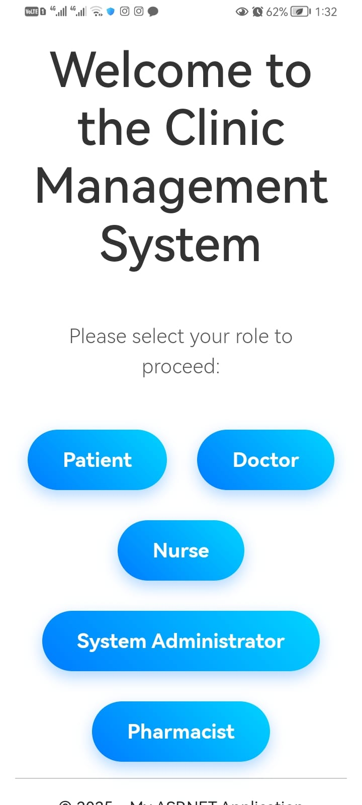
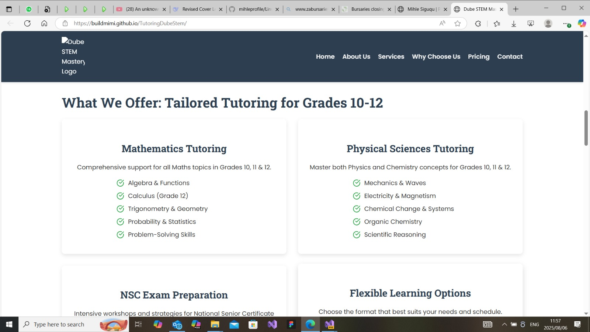
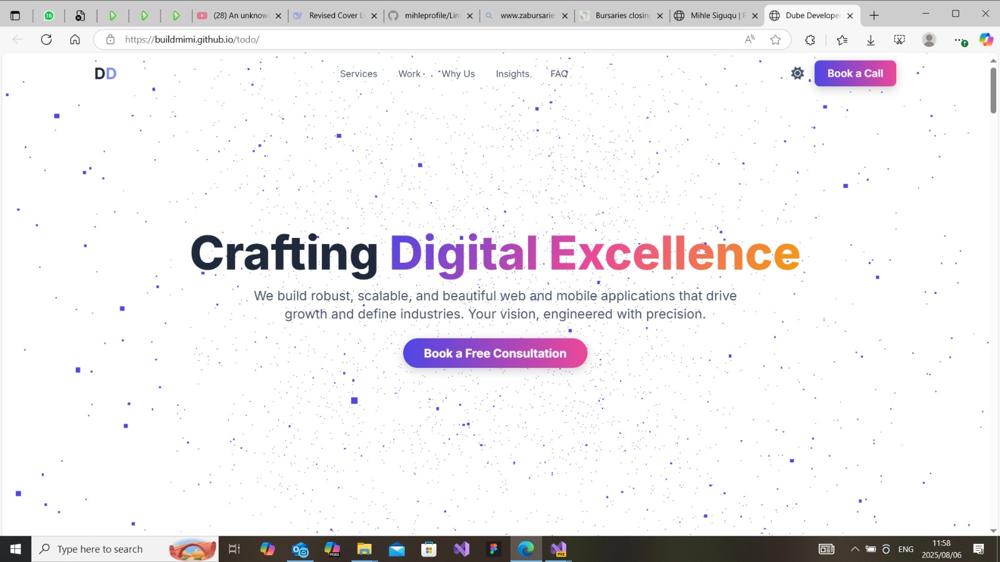
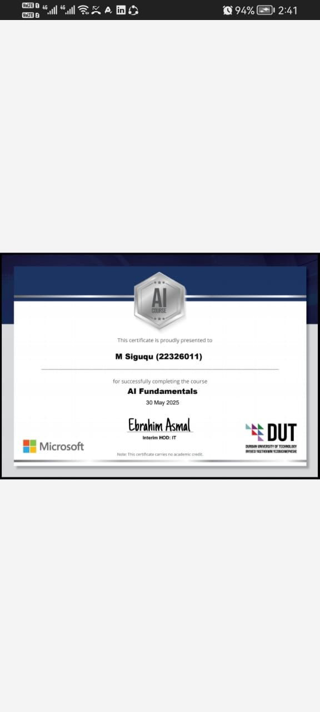
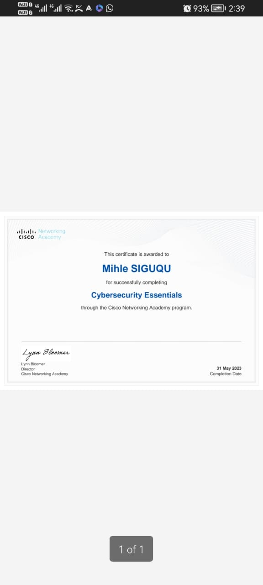
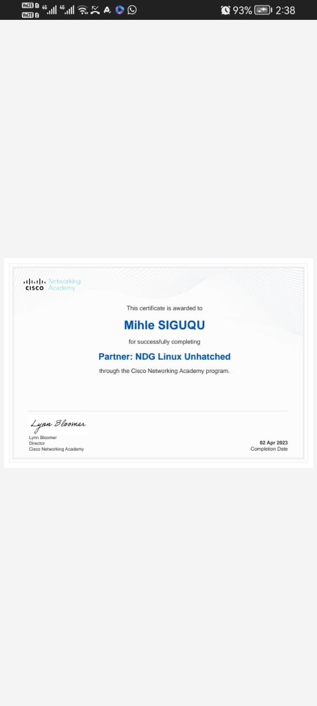
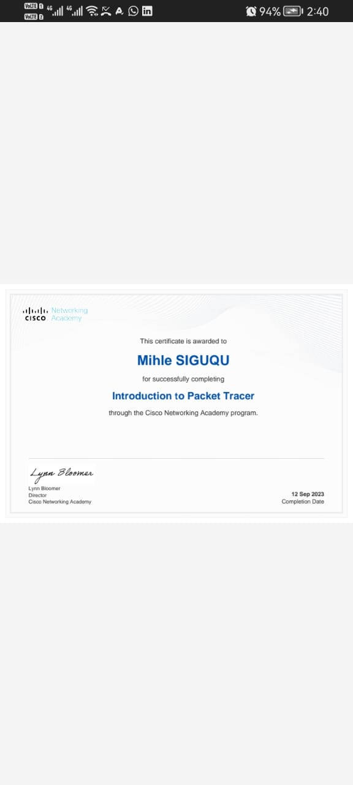
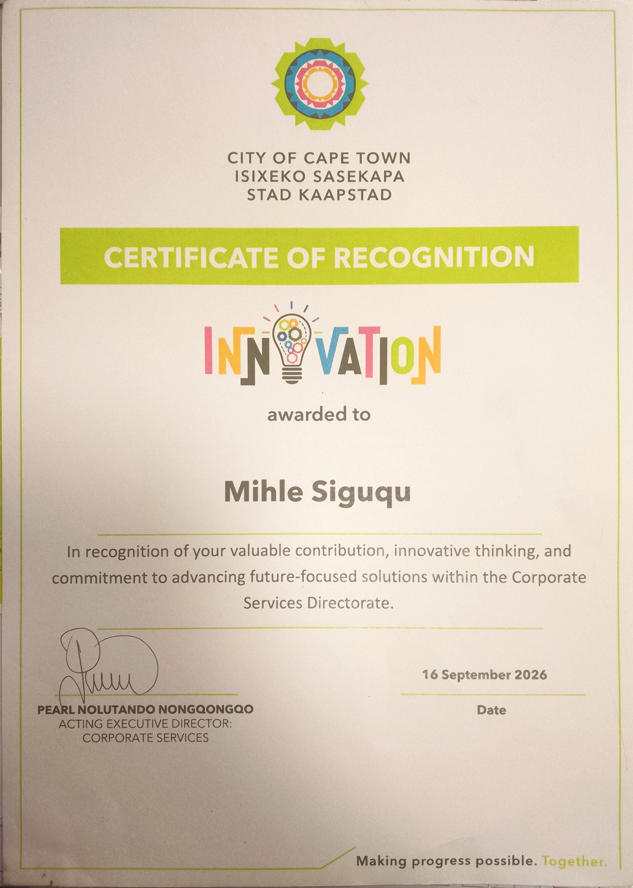
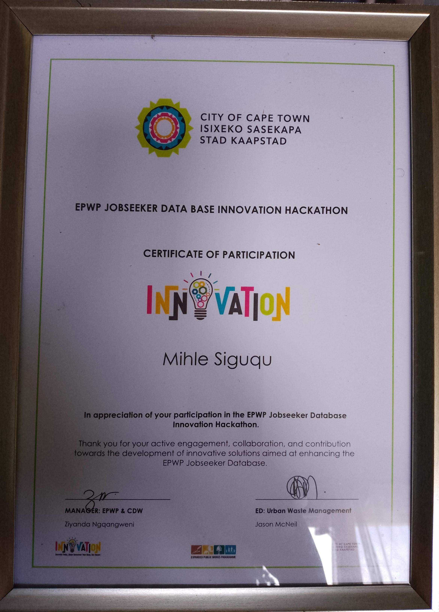

/ About Mihle Siguqu
Professional Profile
ICT Application Development graduate with experience in software development, business analysis, process improvement, and AI-powered solutions. Currently serving as an Information Technology Graduate Intern at the City of Cape Town, contributing to digital transformation initiatives involving Microsoft Copilot, SharePoint, Power Automate, and innovative automation projects.
Technical Stack
Business analysis, application development, and AI-enabled digital transformation.
Programming
- C#
- ASP.NET
- JavaScript, HTML5, CSS
Microsoft Tech
- SharePoint Online
- Power Automate
- Microsoft 365 & Copilot
Analysis
- Requirements Gathering
- SDLC & Process Mapping
- Stakeholder Engagement
AI & Automation
- Generative AI
- Prompt Engineering
- Intelligent Automation
Work Experience
Information Technology Intern
City of Cape Town Government
- Support digital transformation, innovation, and technology initiatives within the Information Systems & Technology environment.
- Conduct business analysis activities including requirements gathering, stakeholder engagement, process analysis, and solution documentation.
- Contribute to AI-powered proof-of-concept solutions using Microsoft Copilot, SharePoint, Power Automate, and Microsoft 365 technologies.
- Research emerging technologies, Generative AI capabilities, and automation platforms to support innovation initiatives.
- Document current-state workflows using process analysis and swimlane diagrams, and maintain project artefacts, requirements, and initiative records.
- Support project coordination through meeting records, action tracking, task registers, demand tracking, and SharePoint information management.
- Contribute to staff orientation resources, event-planning guidance, awareness material, and stakeholder workshops.
Freelance Full-Stack Developer
Amora Digital Solutions
Designed and developed custom software and web-based solutions, building responsive front-end and back-end systems for business needs.
- Worked through project stages from initial planning and understanding requirements to implementation and deployment.
- Delivered and maintained a varied portfolio of web projects, including business and service websites, using responsive layouts and user-focused design.
- Balanced visual presentation with functional requirements to provide clients with practical digital solutions.
Waitress
Bootlegger Coffee Company
Delivered professional customer service in a busy, fast-paced café environment, helping customers with enquiries, orders, and general requests.
- Communicated courteously with customers and responded to their needs throughout their visit.
- Managed multiple service requests while maintaining a helpful, professional approach during busy periods.
- Worked collaboratively with colleagues to support an efficient customer-service experience.
Office Assistant
JNT Engineering
Provided general administrative and office support at an engineering business, helping maintain records and support daily operations.
- Assisted with organising and maintaining office records and documentation.
- Supported routine administrative tasks and general office coordination.
- Helped keep day-to-day business activities organised through reliable administrative assistance.
Featured Projects

DUT Clinic System
A comprehensive web portal solving inefficient manual patient tracking. Features real-time booking and digital medical records.

Amora
Digital
Sasah's
Beauty
Summit
& Sizzle

JobSeekers Hackathon
JobSeekers Hackathon
A project created for the JobSeekers Hackathon.
DubeDevelop
Gundu Attorneys
Manqobatours
MECS Engineering
Projects & Activities
Mihle Siguqu (Internship Portfolio)
This portfolio showcases the projects, research initiatives, business analysis activities, innovation programmes, process improvement efforts, and proof-of-concept developments completed during my internship within the Sm@rtCape Research & Development environment at the City of Cape Town. The work spans digital transformation, artificial intelligence, solution design, stakeholder engagement, innovation management, and Power Platform development.
Sm@rtShop IT Equipment Team work
Procurement Process Analysis
Sm@rtShop IT Equipment Team work
Procurement Process Analysis
Procurement Process Analysis and Swimlane Development
Mapped the end-to-end IT equipment procurement workflow, identifying stakeholders, responsibilities, activities, decision points, approvals, and handovers. The swimlane made the current process easier to understand and gave stakeholders a foundation for identifying inefficiencies, system enhancements, and process improvements.
Meeting Administration and Documentation
Recorded discussions, decisions, and action items, and maintained accurate meeting records to support accountability, stakeholder communication, project execution, and governance.
Sm@rtShop Branded Goods Team work
Inventory Management
Sm@rtShop Branded Goods Team work
Inventory Management
Business Discovery and Requirements Gathering
Engaged branding and operational stakeholders through workshops to understand solution requirements, current inventory practices, and operational challenges. Findings informed future implementation planning and solution design.
Stakeholder Workshop Preparation
Prepared structured business analysis questions to surface pain points, understand existing processes, and identify opportunities for improvement and technology recommendations.
Inventory Management Process Swimlane
Created an As-Is swimlane documenting workflows, stakeholder responsibilities, dependencies, and information flows. The diagram supported stakeholder presentations, process reviews, and future solution design.
Sm@rtCape Research & Development
Research, Enablement & Operations
Sm@rtCape Research & Development
Research, Enablement & Operations
AI Video Creation Research
Evaluated CapCut, Clipchamp, and NotebookLM for usability, functionality, content creation, and automation, identifying potential uses in awareness campaigns and project demonstrations.
Employee and Intern Orientation Pack
Researched organisational information, consulted stakeholders, and documented processes, policies, systems, and departmental operations to create practical onboarding guidance. This ongoing work aims to strengthen readiness and onboarding effectiveness.
Task Planning and Productivity Tool Research
Compared SharePoint Lists, Microsoft Planner, Microsoft To Do, SharePoint Tasks, OneNote, and Excel for collaboration, workload management, reporting, and task tracking to inform team productivity discussions.
Team Task Management and Demand Tracking
Maintained the departmental task register, action tracker, and demand list; updated statuses and priorities, monitored progress, reported outstanding work, and supported workload planning.
AI Innovation Discovery with Councillor Services
Explored stakeholder needs and potential AI proof-of-concepts, including intelligent search and automated meeting minutes to improve information retrieval and knowledge management.
Sm@rtCape Purpose Statement and Awareness Campaign
Helped develop communication and awareness materials explaining the R&D team's purpose, objectives, innovation mandate, and digital transformation work.
SharePoint Information Management
Organised project repositories, uploaded artefacts, updated records, and maintained accessible, governed documentation to support collaboration.
Standardised Proof of Concept Framework
Contributed to a standard PoC initiation template establishing repeatable governance, consistency, and documentation practices for innovation initiatives.
Events Planning Orientation Resource
Developed an orientation pack to simplify and standardise event planning, drawing on organisational research and cross-department stakeholder input.
- Procedures and approvals
- Venue bookings
- Communications
- Security and visitor management
- Catering and AV requirements
- Budgeting and compliance
HR Shortlisting Recommendations Agent
Recruitment Proof of Concept
HR Shortlisting Recommendations Agent
Recruitment Proof of Concept
Initiative Documentation and Business Analysis
Supported the AI-assisted bulk recruitment PoC by developing its initiation document, capturing requirements, defining the problem and objectives, mapping recruitment workflows, documenting architecture, scope, benefits, success measures, and project artefacts. The concept supports HR teams while retaining human oversight of recruitment decisions.
User Requirements Management
Maintained the user requirements repository through stakeholder workshops, documenting business rules, use cases, and functional and non-functional specifications for planning, design, and implementation.
Power Automate Recruitment Solution Prototype
Designed and documented a prototype using Power Automate, SharePoint Lists, and SharePoint Document Libraries to collect candidate information, extract submitted document data, and update central recruitment records. The design established a basis for future AI-assisted evaluations and recommended Power Apps for a user-facing interface.
HR Shortlisting Closure Documentation
Contributed to the ongoing closure report covering solution architecture, technical stack, process improvements, future recommendations, updated swimlanes, outcomes, and lessons learnt for knowledge transfer and governance.
VIKI Initiative Team work
Documentation & Readiness
VIKI Initiative Team work
Documentation & Readiness
VIKI Proof of Concept Documentation
Consolidated initiative objectives, proposed capabilities, stakeholder requirements, and implementation considerations to support planning, engagement, and governance.
VIKI Awareness and Promotional Videos
Developed promotional video concepts using AI video tools to support awareness and adoption, while researching alternative technologies for future communications.
Site Assessments and Implementation Planning
Conducted site assessments and room measurements, documented physical layouts and environmental considerations, and supported implementation preparation.
Copilot and AI Innovation
AI Proofs of Concept
Copilot and AI Innovation
AI Proofs of Concept
Copilot Search Engine Proof of Concept
Worked with stakeholders to identify information retrieval challenges and demonstrate a Copilot-powered search experience for more accessible organisational knowledge and faster, more productive information discovery. The demonstration generated stakeholder interest and further implementation discussions.
Minutes of Meeting AI Agent
Developed and demonstrated a Copilot-powered agent that generates structured meeting minutes from transcripts, recordings, and reference documents, showing how to reduce administration, improve consistency, and accelerate follow-up while retaining human review and approval.
AI Governance and Initiative Tracking Team work
Maintained AI initiative records in GitLab to improve visibility, governance, reporting, progress tracking, and organisational oversight of innovation work.
Innovation Challenges & Hackathons
Designing Inclusive Civic Solutions Team work
Innovation Challenges & Hackathons
Designing Inclusive Civic Solutions Team work
CS Digital Innovation Programme — CitySkyLink
Developed five concepts exploring how technology could shape Cape Town by 2050. CVConnect, CitySkyLink, and BoB were shortlisted. CitySkyLink reached the top seven and placed fifth. Contributions included concept development, presentation and marketing materials, demonstration setup, and stakeholder pitching.
CS Digital Innovation Finalist Presentation
After selection among the top seven of 44 submissions, refined the concept, strengthened the business case and presentation, and delivered the final pitch to judges and stakeholders.
Civic Portal — Job Seekers Hackathon Team work
Conceptualised a more accessible way to connect job seekers with municipal employment opportunities and career support. Work included user research, problem analysis, requirements gathering, process design, solution concept development, presentation, and stakeholder engagement.
View the City of Cape Town’s EPWP Jobseekers Hackathon winners postSkills Demonstrated
Across these initiatives, we applied a broad mix of analytical, technical, and collaboration skills.
Together, these projects reflect practical experience delivering digital innovation, proofs of concept, business process improvements, and AI-enabled solutions in a municipal government environment.
Education & Qualifications
National Diploma: Application Development (ICT)
Durban University of Technology (DUT)
Certified Excellence

Azure AI Fundamentals
Microsoft
Generative AI
Microsoft

Cybersecurity
Cisco

Linux Unhatched
Cisco

Packet Tracer
Cisco

City of Cape Town Certificate
2026

City of Cape Town Certificate
2026
Let's Connect
Get in Touch
I am currently contributing to digital transformation and innovation initiatives, with a focus on software development, business analysis, and AI-powered solutions that improve service delivery and operational efficiency.